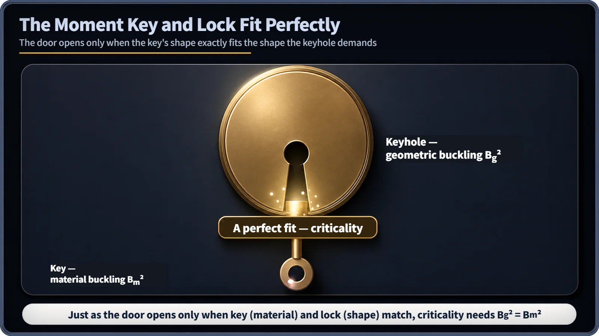

Neutron Physics & the Core · 092
The Deal Closes Only When the Specs Match — Geometric Buckling Meets Material Buckling
The shape writes a requirement sheet, the material writes an offer sheet. Criticality is the moment the numbers match.
Geometric buckling (Bg²) is set only by a core's shape and size; material buckling (Bm²) is set only by its fuel and moderator composition. The two are completely independent, and a reactor is critical only when they are exactly equal: Bg² = Bm². [1]
Two documents to close a deal
Buckling (B²) measures how sharply the neutron flux in a core is bent. That single number is really two conditions meeting. Picture a custom order: the buyer hands over a requirement sheet ("this shape and size need these specs"), and the supplier hands over an offer sheet ("our materials can deliver up to these specs"). The deal closes not when the numbers are roughly similar, but when they match exactly.
The shape's requirement: geometric buckling
The steady-state neutron diffusion equation is ∇²φ + B²φ = 0. Solve it with the boundary condition that the flux falls to zero at the extrapolated boundary just beyond the core's edge, and a set of eigenvalues appears. The lowest is the geometric buckling Bg². It depends only on whether the core is a slab, cylinder or sphere and on its dimensions, never on what fills it. [1]
For a slab core of thickness a, it is approximately Bg² ≈ (π/a)², linked to the cosine flux shape φ(x) = φ₀ cos(Bx). A thicker slab gives a smaller Bg²: a bigger core demands a gentler curvature.
The material's offer: material buckling
In one-group diffusion theory, the material buckling is
Bm² = (k∞ − 1) / L²
where k∞ is the infinite multiplication factor (the growth factor from one neutron generation to the next in an infinitely large core) and L² is the diffusion area (related to how far a neutron spreads, on average, between birth and absorption). Both depend only on composition ratios per unit volume, such as fuel enrichment and moderator-to-fuel ratio. For a given composition, Bm² is the same whether the core is big or small: it reflects the material's recipe, not its amount. [2]
The critical condition
A steady-state flux, and therefore criticality, exists only when Bg² = Bm².
| Core size | Buckling relation | Neutron population |
|---|---|---|
| Larger than critical size | Bg² < Bm² | Grows (supercritical) |
| Exactly critical size | Bg² = Bm² | Steady (critical) |
| Smaller than critical size | Bg² > Bm² | Falls (subcritical) |

This is the familiar condition keff = 1 in another language. Substituting Bm² = (k∞ − 1)/L² into the approximation keff ≈ k∞ / (1 + L²Bg²) and setting keff = 1 gives exactly Bg² = Bm². One phrasing counts how neutrons multiply per generation; the other describes how bent the flux is. [1]
Common mix-ups
"They are two names for the same thing." No. One is set purely by geometry and the other purely by material. Their equality is not an automatic identity; it holds only at criticality, when designers have deliberately matched size and composition.
"Loading more fuel changes the material buckling." No. k∞ and L² depend only on composition ratios, so the effect of how much material there is goes entirely into the core size, the geometric side.
"Buckling means something bends." Not here. Unlike structural buckling of a column, reactor-physics buckling is only the mathematical curvature of the neutron flux.
Design, not a control-room dial
Matching the two is mainly a design task: choosing size and shape together with enrichment and moderator composition so that Bg² = Bm² at the target operating conditions. During operation the core's geometry is fixed. Control rods and boron concentration slightly change how strongly the material absorbs neutrons, a bit like nudging the material-buckling value, but operators call that controlling reactivity, not adjusting buckling.
Key takeaways
Geometric buckling comes from shape and size, material buckling from composition, and a reactor is critical only when Bg² = Bm², which is the same condition as keff = 1. A core larger than its critical size is supercritical; a smaller one is subcritical.